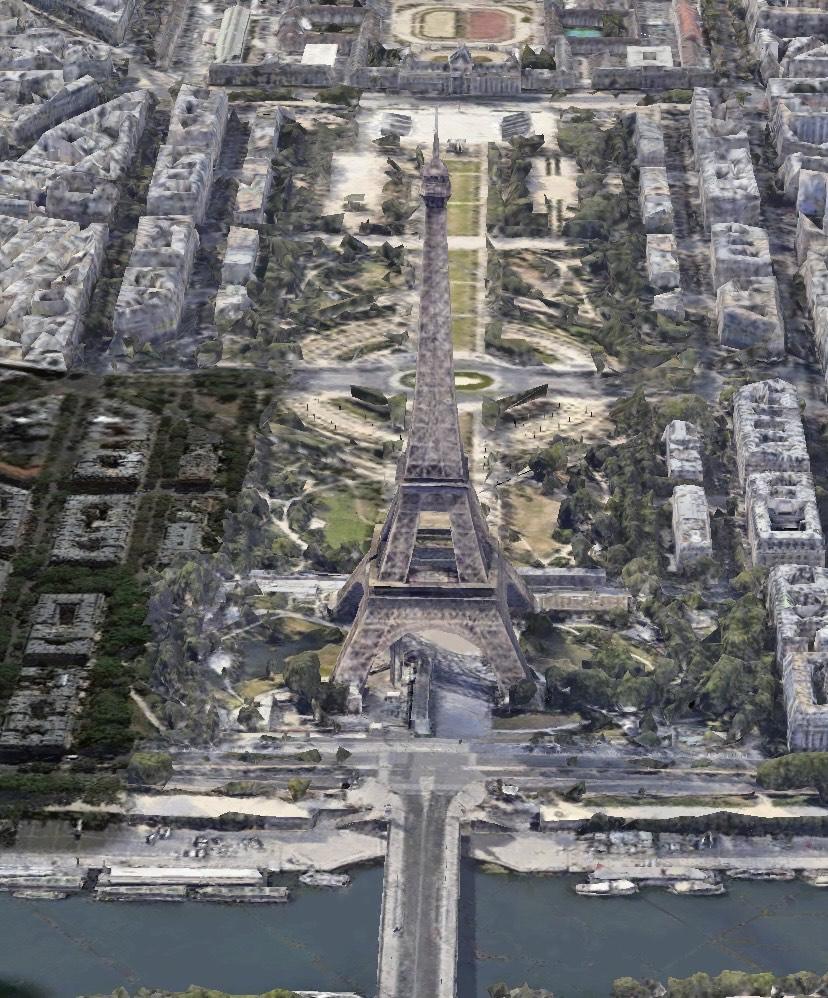

Wieża Eiffla (fr. Tour Eiffel) – najbardziej znany obiekt architektoniczny Paryża, uznawany za symbol tego miasta i niekiedy całej Francji. Jest najwyższą budowlą w Paryżu, a w momencie powstania była najwyższą budowlą na świecie.
„Żelazna dama” stoi w zachodniej części miasta, nad Sekwaną, na północno-zachodnim krańcu Pola Marsowego.
Wieżę zbudowano specjalnie na paryską wystawę światową w 1889 roku. Miała upamiętnić setną rocznicę rewolucji francuskiej oraz zademonstrować poziom wiedzy inżynierskiej i możliwości techniczne epoki, być symbolem ówczesnej potęgi gospodarczej i naukowo-technicznej Francji. Projekt podkreślał architektoniczne walory stali, wbrew dominującemu w XIX wieku akademizmowi, który uważał żelazo za prosty materiał budowlany. Projekt wykorzystywał doświadczenia epoki i jej konstruktora, Gustave’a Eiffela, w budowie kolejowych mostów stalowych. Po 20 latach budowla miała być rozebrana, lecz Eiffel nie chciał do tego dopuścić i założył na wieży laboratorium aerodynamiczne i meteorologiczne. Jednak dopiero udane eksperymenty (z udziałem Juliana Ochorowicza, wynalazcy i konstruktora) z umieszczonym na szczycie telegrafem „bez drutu” ocaliły wieżę i odstąpiono od jej demontażu. W przededniu I wojny światowej stała się obiektem militarnym: zapewniała Paryżowi łączność z posterunkami wojskowymi na granicy z Niemcami (do tej pory do komunikacji używano gołębi pocztowych). Zachowana budowla z czasem stała się największą atrakcją turystyczną Paryża, którą zwiedziło już ponad 300 milionów ludzi.Jest to ażurowa konstrukcja kratowa z kutej stali. Jej całkowita wysokość zmieniała się kilkukrotnie za sprawą zamocowanej na jej szczycie anteny:Jej wysokość zmienia się o 18 cm w zależności od temperatury. Cała konstrukcja wieży składa się z 18 038 części metalowych i około 2,5 mln nitów, jej całkowita masa, razem z betonowymi filarami, wynosi około 10 000 ton. Nacisk wieży na podłoże wynosi 4,5 tony/m², a więc zaledwie dwukrotnie więcej niż nacisk wywierany przez kroczącego człowieka.
Konstrukcja wsparta jest na czterech podstawach o boku 25 m każda. Na wysokościach 57,63 m, 115,73 m i 276,13 m znajdują się tarasy widokowe. Zajmuje obszar kwadratu o boku 125 m. Na sam szczyt wieży prowadzi 1665 stopni.
Eiffel przeprowadził wiele obliczeń dotyczących odporności konstrukcji na działanie wiatru. Największa zarejestrowana amplituda kołysania pod wpływem wiatru wyniosła 9 cm w 1999.
W latach 1980–1985 została przeprowadzona renowacja, w wyniku której budowla straciła na wadze 34 tony. Również wtedy zamocowano na wieży nowe oświetlenie składające się z 352 reflektorów, każdy po 1000 W, oświetlających wieżę w nocy (w 2004 wymieniono po raz kolejny lampy, tym razem zastosowano nowocześniejsze i bardziej oszczędne, bo mające 400 i 600 W). Oświetlenie zamontowane na samej wieży umożliwia zmianę jej wyglądu po zmroku (w okresie świąt państwowych i Nowego Roku). Wieża bywa przyozdabiana małymi lampkami lub podświetlana we francuskie barwy państwowe. W roku 2000 na szczycie wieży zainstalowano na stałe dwa reflektory, które każdej nocy kręcą się jak latarnia morska i są widoczne z odległości 80 km. Co siedem lat, aby zapobiec korozji, wieża jest malowana, do czego zużywa się 50–60 ton farby.
Na wieży dostępne są trzy poziomy widokowe. Pierwszy i drugi są dostępne schodami i windami, trzeci poziom jest dostępny tylko windą.
Wieża Eiffla była najwyższą budowlą świata do 1930 roku, gdy w Nowym Jorku zakończono budowę Chrysler Building o wysokości 318,9 m.